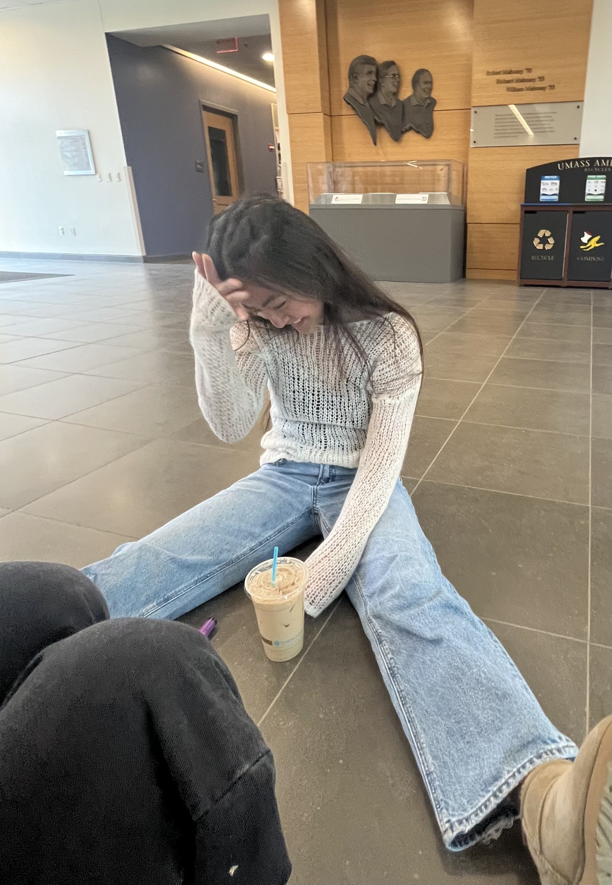

Friday, March 28, 2025
In the morning...
After waking up and getting ready for the day, I headed to the ISB café to get a drink and read some poems for Jabberwocky. I spent about an hour there before going to my discussions: discrete math and web development. I had a call for my internship that I took in SEL, before meeting my friends to get lunch.
In the afternoon...
After having lunch from Blue Wall, my friends and I went over to South College to get some work done.
But before we could lock in, we obviously had to have some caffeine, so we put our stuff down and went to Woo Café to get matcha and lattes.
The picture to the right was me right after getting out drinks and thinking about all the work I had to do… We all had a lot of upcoming assignments and exams, so it was important that we remained focused.
We went back to South College after that and stayed there until it was dark.